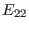
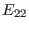

Next: Cylindrical geometry limit Up: Analytical approximations to continuous Previous: Slow sound approximation
If we set all the thermal pressure terms in  and  to be zero
(this is equivalent with setting
), the sound wave will be removed
from the system. This approximation is called zero beta limit in
literature[6]. Numerical results indicate the zero beta limit
will remove all the sound continua. Compared with the slow sound
approximation, the zero beta limit will make the frequency of the Alfven
continua a little lower, and make the zeroth continua gaps (BAE gaps)
disappear[7].
and  to be zero
(this is equivalent with setting
), the sound wave will be removed
from the system. This approximation is called zero beta limit in
literature[6]. Numerical results indicate the zero beta limit
will remove all the sound continua. Compared with the slow sound
approximation, the zero beta limit will make the frequency of the Alfven
continua a little lower, and make the zeroth continua gaps (BAE gaps)
disappear[7].